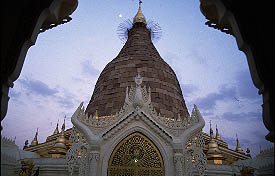
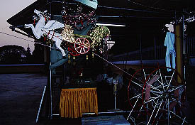
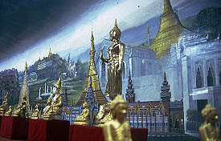
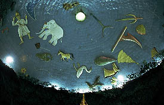
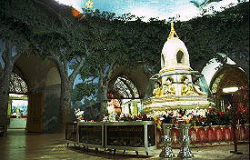
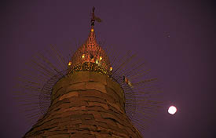
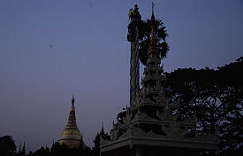
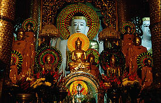

MahaWizaraPagoda
マーハーウィザラパゴダ
ヤンゴンのシンボル、シュエダゴンパゴダ、の前にひっそり佇むパゴダ。といっても決して小さなパゴダな訳ではない。結構立派だ。
 
比較的新しいこのパゴダは確か以前の権力者が建てたそうだ。人が少ないのは夕暮れ時だからだけではないのだろう。ここも改修中。えらく豪華な金箔運搬器も寂しそうだ。

内部には周りをぐるりとミャンマー各地の有名寺院の絵とともに有名仏像のレプリカがあって、5分でミャンマー聖地巡礼が出来てしまうという便利なもの。で中央のホールに入ると壁は安い書き割りのような森仕立て。
 
天井のドームにはビルマ式星座が象られている。
星座と言えば梶原一騎の遺作「男の星座」位しか連想できない私なので、一般的に流通している星座とどう違うのか良く分からないのだが、多分ビルマ式星座なのだろう。仏塔座とか象座とかだから。
外に出ると、もう日は沈んでいる。向こうにはシュエダゴンパゴダが見えたりして、結構寂しげなところであった。
 
おまけ
マハーウィザラパゴダのすぐ近くにあった名も知らぬパゴダ。
前を通りかかると中の仏像が物凄い事になっていたので、入ってみた。

ミャンマーではこの手の点滅式電飾光背はあったりまえなのだが、これだけ数が揃うと電飾光背に馴れた私も思わずビックリ。これじゃあパチンコ台ですよ。
おしまい
ミャンマーパゴダ列伝２のページへ
珍寺大道場 HOME